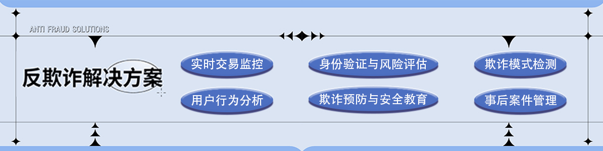

- 实时交易健康
- 身份验证与风险评估
- 欺诈模式检测
- 用户行为分析
- 事后案件管理
- 欺诈预防与安全教育
实时交易监控模块是防欺诈系统中的关键组成部分。该模块利用高级技术，如复杂的算法、人工智能（AI）和机器学
习（ML），实时监控交易活动，以识别和防范可能的欺诈行为。在此模块中，每笔交易都会被分析，考虑到多个因素，如
交易的金额、频率、时间以及与用户历史行为的对比。通过分析这些数据，系统可以立即识别出与正常用户行为模式不一
致的异常交易。例如，如果一个用户在很短的时间内尝试了多次大额交易，这可能会触发系统的警报，因为这种行为可能
表明账户被盗或欺诈。实时交易监控模块不仅监控标准的财务指标，而且还可以跟踪与地理位置相关的信息。例如，如果
一个用户的银行卡突然在国外使用，而用户的手机定位仍然显示在本国，这种不匹配可能意味着存在风险。为了提高精准
性，该模块通常结合了行为分析，如用户在应用中的导航模式，以及设备指纹技术，如设备类型和操作系统。此外，实时
交易监控模块还会参考全球欺诈数据库和黑名单，这些数据库包含了已知的欺诈者和风险交易的信息。通过与这些数据库
进行对比，监控系统能够更快地识别出潜在的欺诈行为。一旦系统检测到可疑交易，它就会自动采取措施来保护用户和机
构的资金。这些措施可能包括冻结交易、请求额外的用户身份验证或将案件转发给安全团队进行进一步的调查。为了不影
响客户体验，实时监控系统通常被设计为尽量减少对合法交易的干扰。实时交易监控模块也是适应性强的，能够随着欺诈
策略的演变而更新其检测机制。它通过持续学习新的欺诈模式和技术，不断调整自身的参数和规则。这种灵活性确保了系
统能够及时响应新出现的欺诈威胁。最后，该模块还提供了详细的报告和分析工具，帮助风险管理人员更好地了解欺诈企
图和系统的整体性能。通过这些工具，团队可以监控警报的准确性，调整系统设置，并优化整个监控过程。综上所述，实
时交易监控模块是防欺诈系统的核心，为金融机构和客户提供了一个强大的工具，以保障资金的安全和减少欺诈风险。通
过不断的技术创新和智能分析，它能够实时检测和应对复杂多变的欺诈行为。